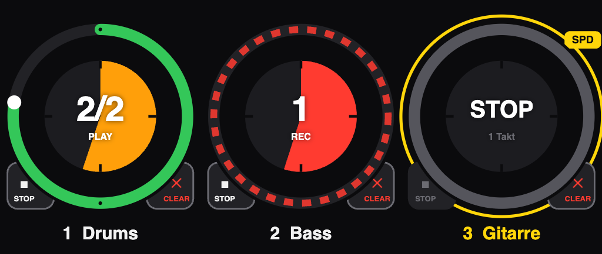

Looper Display is a tool that detects the first eight loopers in an Ableton project and visualizes their state as spinning rings in a web interface that also works over the local network on other devices (iPad, iPhone, etc.).
That web interface can also control the loopers directly — tap a ring, plus Stop and Clear via the corner buttons. That only needs a few MIDI mappings in Live; the Remote Script handles the rest automatically.
On top of that, and optionally, the loopers can also be played from real hardware: a KORG nanoKONTROL2 (with LED feedback) and/or a Roland SPD-SX PRO (by pad). Both trigger the same mappings as browser control and can run at the same time. The KORG also lets you start and stop all loopers at once, and control each looper's volume fader in Ableton.
The app itself is a ready-built program for Apple Silicon Macs
(M-series chips). No Node.js, no npm install, no terminal
knowledge required. The Programm (nicht anfassen) folder
needs to stay exactly as it is — the node_modules inside
it holds the MIDI link used to control individual loopers from the
browser.
Copy the folder Zum Kopieren/Remote Scripts/LooperDisplay to
~/Music/Ableton/User Library/Remote Scripts/
If you also own a Roland SPD-SX PRO, copy the
Zum Kopieren/Remote Scripts/SPD_SX_Pro_Looper folder there
as well.
Settings → Link, Tempo & MIDI.LooperDisplay in an empty Control Surface row.| Control Surface | Input | Output |
|---|---|---|
LooperDisplay | None | None |
✅ Without your own hardware, Input and Output stay set to „None" — a KORG nanoKONTROL2 is optional. Even without one connected, the script still feeds all the data the display needs.
If you have a real KORG nanoKONTROL2 in your rig, set the matching ports there instead, otherwise its buttons and LEDs stay without effect:
| Control Surface | Input | Output |
|---|---|---|
LooperDisplay | nanoKONTROL2 (SLIDER/KNOB) | nanoKONTROL2 (CTRL) |
Switch to this folder in Finder and double-click
Looper-Display starten.command there.
The very first time, macOS also asks once whether „osascript" may control Terminal — needed to minimize the window and later close it again. Please allow it. Without that permission the app still runs fine, the window just stays open.
For a tablet, additionally open the second address shown in the (minimized) Terminal window there in Safari:
Anzeige: http://localhost:8080
http://192.168.0.XXX:8080 (fuer Tablet/Handy)
For a display with no browser interface at all: open the second address in Safari, then Share icon → „Add to Home Screen" — not „Add Bookmark". The page then launches from its own icon with no address bar whatsoever. More on this, once the app is running, under „❓ Help" in the top right of the display.
In Finder, double-click Looper-Display beenden.command
— it finds and stops the app even if the (minimized) Terminal window is
long out of sight. The window then closes itself too.
Two more, equally good ways: ⏻ Server beenden in the top right of the display itself, or Ctrl + C in the (restored) Terminal window.
Closing just the browser tab showing the display leaves the app running in the background — usually what you want if a tablet is meant to keep the page open permanently.
Each ring can be tapped, and there are buttons for Stop and Clear too. Unlike the four transport buttons at the top of the display, this needs a small one-time setup, because Ableton doesn't offer a direct "quantised stop" or "clear" command through its API for loopers. The way around that: a virtual MIDI bus the app talks to, and an entirely ordinary MIDI mapping in Live, just like you'd make for any hardware controller.
IAC Driver (Bus 1) —
Remote on, Track off.Cmd + M in Live (Map Mode). For each looper: click the
big transport knob, then briefly tap the ring in the browser — the
mapping is created automatically. Do the same for the STOP and CLEAR
corner buttons.Cmd + M, save the set.Live then quantises everything itself, exactly as with a real controller.
Control Surface LooperDisplay (step 2) with Input
nanoKONTROL2 (SLIDER/KNOB) and Output
nanoKONTROL2 (CTRL) instead of „None". Two things need to
be right on the controller itself for this to work:
On the Mac, the „Communication" menu items in the KORG KONTROL Editor are often not clickable (tested on macOS 26 on Apple Silicon). Workaround: write the setting once on a Windows machine — after that it stays in the controller for good, and the Mac never needs the editor again.
Second Remote Script — copy the folder
Zum Kopieren/Remote Scripts/SPD_SX_Pro_Looper to
~/Music/Ableton/User Library/Remote Scripts/ as well. In
another free Control Surface row:
| Control Surface | Input | Output |
|---|---|---|
SPD_SX_Pro_Looper | SPD-SX PRO | IAC-Treiber Bus 1 |
The output doesn't go to the SPD, but into the same IAC loop as the nanoKONTROL2. On the device, nine pads need to be programmed to fixed notes (channel 1).
The folder Zum Kopieren/SPD-SX Pro Preset contains
the kit file KIT-APP_LooperDisplay.TD0 — it has all nine
pad assignments already set up.
BACKUP → LOAD 1 KIT.…
to pick the file KIT-APP_LooperDisplay.TD0, then
OK.To check, or if programming by hand, the preset's pad layout:
| Pad | Note | Function (label in the preset) |
|---|---|---|
| 1 | 1 | Loop DELETE — Clear |
| 2 | 4 | START ALL Loops — start all loopers, immediately |
| 3 | 62 | SONG START/STOP — not handled by the script, Live's transport directly |
| 4 | 2 | Loop STOP — Stop |
| 5 | 5 | STOP ALL LOOPER — stop all loopers, quantised |
| 6 | 65 | LOOPING Toggle — not handled by the script, loop in Arrangement view via AbleSet |
| 7 | 3 | Loop GO — Start / Record / Overdub |
| 8 | 6 | PREV Looper — ◀ previous looper |
| 9 | 68 | NEXT Looper — next looper ▶ |